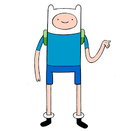

Estoy realizando el Ciclo de Desarrollo de Apliciaciones Multiplataforma porque desde muy pequeño me encanta el tema de los ordenadores, videojuegos y tecnologías. Desde entonces sabía que me quería dedicar a este mundo.
De momento estoy llevando el curso muy bien, ya no solo el tema de los estudios, sino que mi vida personal va mucho mejor desde que me he mudado a vivir a sevilla por lo que estoy muy contento con la decisión que tomé de venir a vivir aquí.
Espero terminar los dos cursos con muy buenas notas y que pueda salir con una buena oferta de trabajo. Aunque me gustaría seguir estudiando otros grados como Desarrollo de Aplicaciones Web y hacer alguna carrera que tenga que ver con este mundo tengo pensado realizarlo todo mientras empiezo a trabajar con este grado si se da el caso.
Finn el humano de la serie animada "Hora de Aventuras" es uno de los personjes que más me representa ya que aunque a veces es muy perezoso, cuando algo le gusta le pone mucho empeño, como por ejemplo en sus aventuras.
| Ya visité una vez Londres. fuí con el instituto pero perdimos un día ya que hubo overbooking en el avión y tuvimos que esperar hasta la mañana siguiente para despegar. Me encantó todo de Londres y me gustaría ir otra vez pero con más tranquilidad y con mi familia o amigos | |
| Londres |